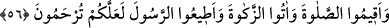

Âyette hitâb bütün kâfirleredir. Ya da hitâb Hz. Peygamber (a.s.)’a ve beraberinde
bulunan müminleredir.
Kâşifî der ki: “Âyette geçen “yeryüzü”nden maksad, Arap ve Acem’den kâfirlerin
bulundukları yerlerdir. Çünkü Rasûlullah (s.a.): “Bu din gecenin kapladığı her yere
girecektir.”[179] buyurmuştur.
Rağıb der ki: Hilâfet, bir başkasının yerine geçmektir. Bu ya yerine geçtiği kişinin
bulunmaması, ölümü veya âcizliği sebebiyle ya da halife kılınan kişinin şerefini
yüceltmek içindir. İşte son sebebe binâen Allah, dostlarını yeryüzünde halîfeler
kılmıştır.
“Çünkü onlar bana kulluk ederler; hiçbir şeyi bana eş tutmazlar.” Bu cümle
Allah’ın vaadinin tevhidde sebata bağlı olduğunu ifâde etmektedir. Yâni ibâdette hiçbir
şeyi bana ortak kılmaksızın kulluk ederler.
“Artık bundan” bu vaadden “sonra kim inkâr ederse,” dinden dönerse, küfür ile
muttasıf olup yapılan teşvik ve korkutmalardan etkilenmezse “işte bunlar asıl büyük
günahkârlardır.” Yâni fâsıklıkta, inkâr ve tuğyanda sınırı aşmakta kâmil kimselerdir.
Çünkü tevhidin delillerini gördükten sonra küfürde ısrar, ayrıca bir küfürdür veya bu
büyük nimetlere karşı nankörlüktür.
Müfessirler der ki: “Bu nimetlere nankörlük eden ve hakkını vermeyen ilk kimseler
Hz. Osman (r.a.)’ı öldürenlerdir. Onu öldürdüklerinde Allah onların emniyet ve
huzûrlarını, daha önce üzerlerinden kaldırdığı korku ile değiştirdi. Birbirlerini seven
kardeşler olduktan sonra, birbirlerini öldüren kişiler durumuna geldiler. Allah Teâlâ,
bir millet kendilerinde bulunan güzel ahlâk ve meziyetleri değiştirmedikçe, onlara
verdiği nimetleri değiştirmez. Bir hadiste şöyle buyrulmuştur: “(Bir defa) kılıç
ümmetimin içine girdikten sonra kıyâmete kadar bir daha kalkmaz.”[180]
Mesnevî’de der ki:
Gam karanlıklarından sana gelen,
Utanmazlık ve küstahlıktır
İbrahim Edhem (r.h.) der ki: Bir gün birinin ekininde yürürken sâhibi bana: “Ey
öküz!” diye bağırdı. Bunun üzerine kendi kendime: ‘Ufak bir hatâ yüzünden ismim
değişti. Bu hatâlar çoğaldığı takdirde Allah Teâlâ ma‘rifetimi de değiştirir.” dedim.
56. Namazı kılın; zekâtı verin; Peygamber’e itâat edin ki merhamet göresiniz.
“Namazı kılın, zekâtı verin”: Bu cümle makamın çağrıştırdığı takdiri bir kelimeye
mâtuftur. Yâni îman edin, sâlih amel işleyin ve namaz kılın... Size emrettiği diğer